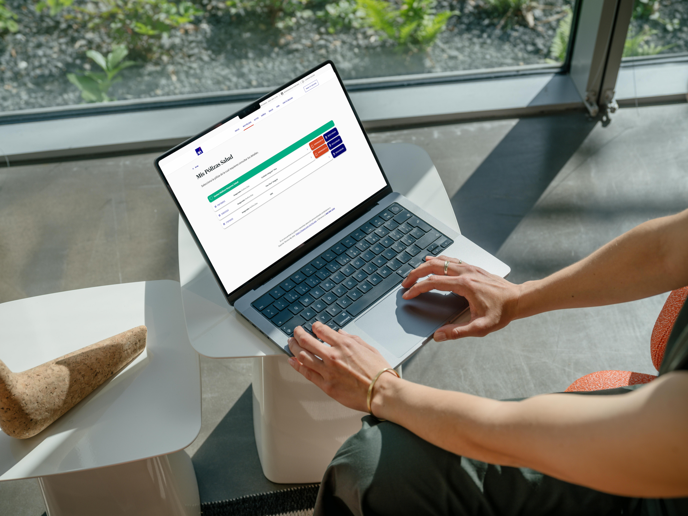

Caso de estudio
Experiencia Unificada Gastos Médicos
Estrategia para la unificación del ecosistema digital para pólizas integrales de salud

Descripción breve
Rediseño estratégico de la experiencia móvil y web para una aseguradora francesa multiramo. El proyecto transformó un ecosistema digital fragmentado y diseñado desde la lógica interna de la empresa en una solución omnicanal unificada. Centralizando los servicios bajo las intenciones reales del asegurado (Entender, Actuar y Dar seguimiento), logramos habilitar el autoservicio y mejorar significativamente la experiencia de los productos de Salud Integral.
Desafío
El ecosistema digital original reflejaba la complejidad de los sistemas internos del negocio, lo que provocaba una baja comprensión de las pólizas, fricciones en tareas y una alta dependencia del contact center. La propuesta inicial consistía en lanzar una app independiente, lo que habría aumentado la fragmentación operativa. El reto de diseño consistió en reencuadrar el problema desde una perspectiva sistémica: evitar la creación de un nuevo canal aislado, unificar las plataformas bajo una arquitectura coherente y mitigar la falta de analítica estructurada para orientar la toma de decisiones basada en necesidades de usuario.
Proceso
Como Product Designer a cargo del extremo a extremo, implementé un enfoque iterativo dividido en tres etapas clave:
Discovery: Realicé investigación cualitativa, análisis heurístico y de arquitectura de la información. Validé escenarios no contemplados mediante sesiones con usuarios, agentes y equipos internos, complementado con un benchmark exploratorio de mercado.
Definición: Sinteticé los hallazgos para alinear los objetivos del negocio con los del asegurado. Construí un Modelo de Intenciones enfocado en tres momentos del ciclo de uso (Entender, Actuar y Dar seguimiento) y traduje los insights a oportunidades de diseño utilizando el framework Jobs to Be Done (JTBD).
Diseño: Definí los principios de diseño del ecosistema y reestructuré la arquitectura de información general. Creé wireframes y prototipos multiplataforma (iOS, Android y Web) para validar 11 flujos principales, colaborando estrechamente con desarrollo y alineándome al sistema de diseño global de la compañía.
Resultado
Para el Usuario: Mayor claridad en el entendimiento de su seguro con términos accionables, reducción de fricciones y una experiencia continua y autónoma entre diferentes dispositivos.
Para el Negocio: Ofreció una estructura clara para que tecnología, operaciones y negocio prioricen futuras iniciativas.
Aprendizaje clave: Las fricciones críticas de experiencia no estaban en features aislados, sino en la estructura del sistema; diseñar desde las intenciones reales del usuario permite resolver escenarios con distintos niveles de urgencia.
Habilidades
Galería
